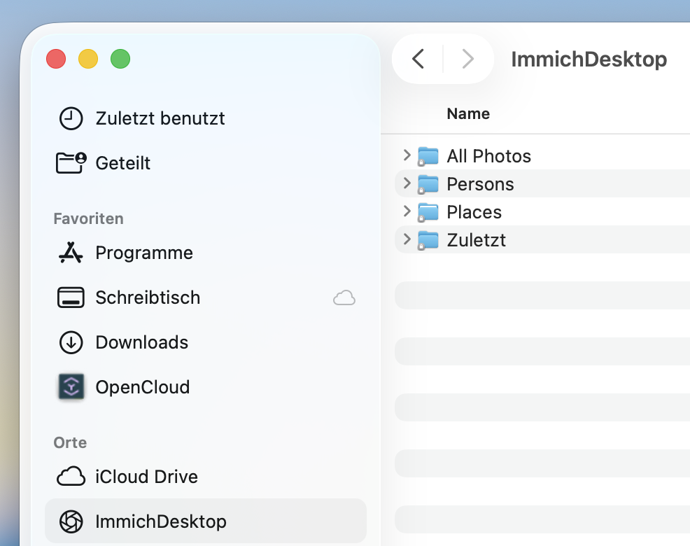
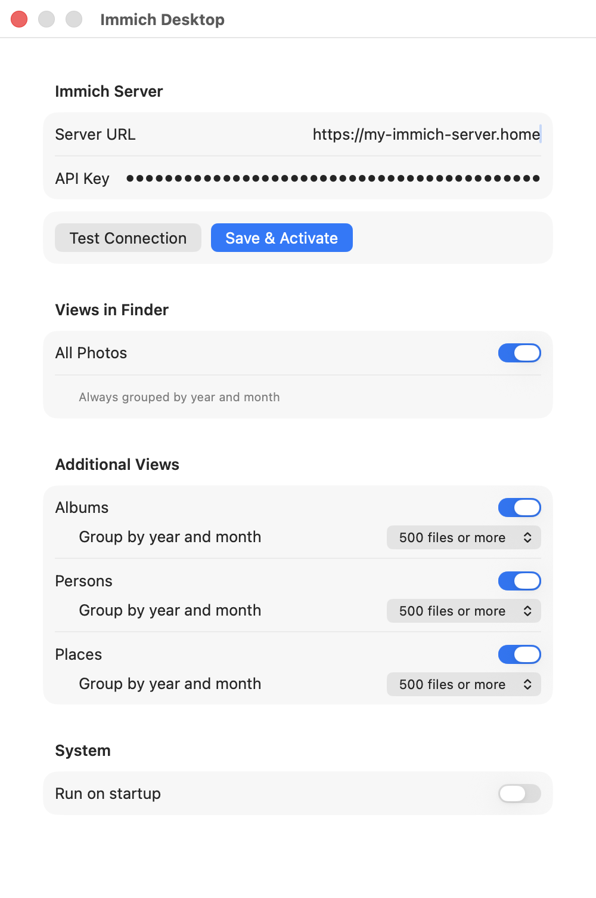

Immich Desktop


Your photos and videos from your immich library,
right in the macOS Finder and in every file
dialog.

Immich in the Finder sidebar
Immich Desktop mounts your server as a location in the macOS Finder sidebar. Browse all items by year and month, plus one folder per album. Files appear with thumbnails — the original is fetched only when you open it.
Connect to your Immich server once
Enter your Immich server URL and an API key, hit Save & Activate, and that's it. No synching or copying. Your photos and videos are directly served from your immich server.

Why Immich Desktop
Native Finder integration
Built on Apple's File Provider system — your Immich photos behave like real files in Finder and in every open/save dialog.
Download on demand
Photos appear as lightweight placeholders with thumbnails. The full-size original downloads only when you open it.
Your data stays yours
Immich Desktop talks directly to your self-hosted server. Nothing is routed through a third party.
Lives in the menu bar
No Dock clutter. A small menu-bar app manages the connection; quit it and Immich disappears from Finder.
Frequently asked questions
How do I access my Immich photos on a Mac?
Install Immich Desktop, enter your Immich server URL and an API key, and your library appears as a location in the macOS Finder sidebar — browsable like any folder, in Finder and in every open/save dialog.
Do my photos pass through a third-party server?
No. Immich Desktop talks directly to your own Immich server. Everything runs locally on your Mac — your photos never pass through anyone else's server.
What do I need to use Immich Desktop?
macOS 14 (Sonoma) or later, an Immich server you can reach.
What permissions does the API key need?
Your Immich API key needs four permissions: album.read,
asset.read, asset.download and asset.view.
asset.view is what enables the Finder thumbnail previews.
Is Immich Desktop free?
Yes. Immich Desktop can be downloaded and used for free.